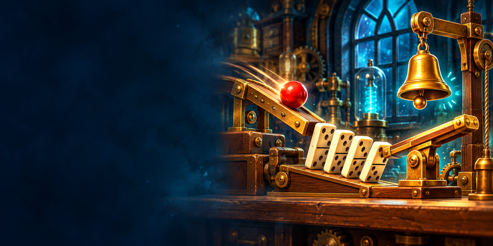
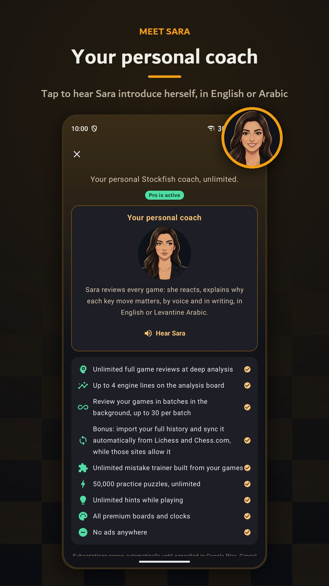
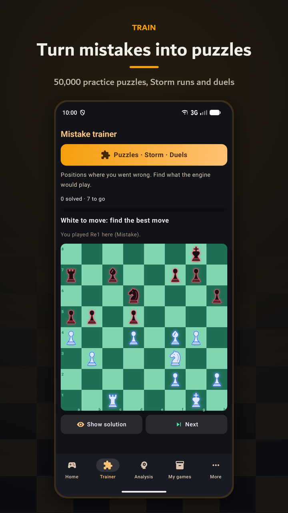
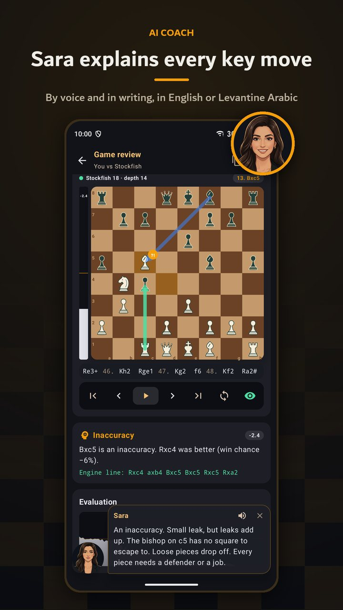
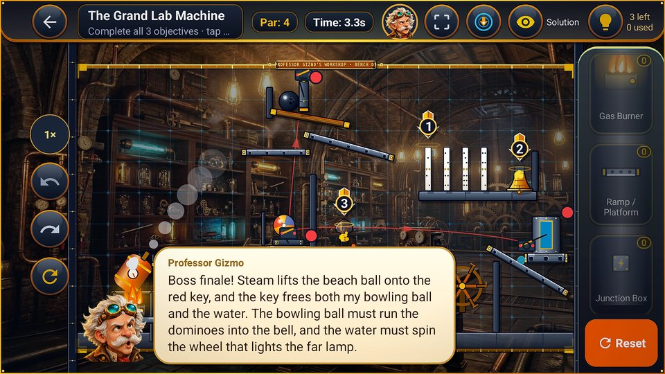
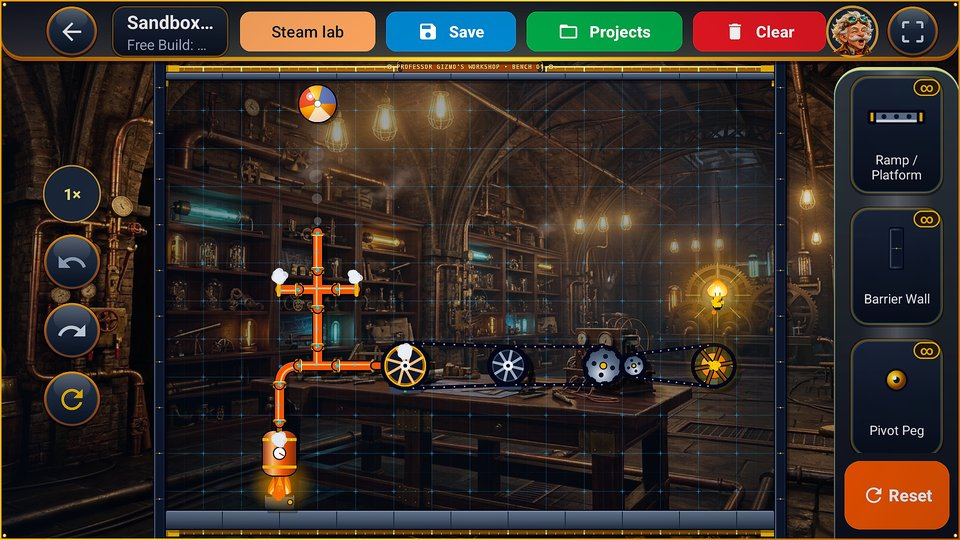

FREE-TO-PLAY ANDROID GAMES
Chess AI & physics puzzles
Meet Sara, your chess coach, then try building a machine that sets a whole chain reaction in motion.
Meet the games ↓





CHESS · COACHING · ONLINE
Chess With Sara: Learn & Play
Play, train and review your games with Sara, a personal chess coach who explains key moves by voice and in writing in English or Arabic.
- 50,000 practice puzzles, Puzzle Storm, and code-based duels.
- Rated and casual online games, arenas, Chess960, and Hidden Queen.
- Stockfish 18 at 12 levels, plus game analysis and PGN import/export.



PHYSICS · CONTRAPTIONS · CHAIN REACTIONS
Psycho Mechanics: Physics
Build a clever—or delightfully chaotic—machine, press Play and see whether your chain reaction reaches the goal.
- Combine ramps, gears, balls, trampolines, magnets and other mechanical parts.
- Solve dozens of handcrafted physics puzzles with multiple possible solutions.
- Experiment in a free-build workshop. Core gameplay works offline; English and Arabic interfaces.
Two ways to play
Study a position with Sara or experiment with moving parts and physics. Both are published Google Play games. Check each store listing for availability, supported devices, and current purchase details.
The games are distributed as installed apps. Their source code is not for sale.